「VRならでは」の体験を作る Unity+VRゲーム開発ガイド | 技術評論社
上記書籍 (初版) の 9 章は Unity の XR Interaction Toolkit の初学者では補完しきれない省略等があるため、ここでは多少構成を変えつつ説明します。
なお、書籍を所持している前提で記載するため、ここだけを読んでも同じことはできないと考えてください。
ただし、Chapter9/10 の内容を実行して体験するだけであれば、サンプルコードの Assets/App/Gun/GunTarget.unity のシーンがそのまま使えます。とても素晴らしいサンプルです。
環境
- Unity 6000.3.6f1
- Meta Quest 3 (Meta Horizon Link 利用)
サンプルコード
- nkjzm/VRLearningBook: 書籍『「VRならでは」の 体験を作る Unity+VR ゲーム開発ガイド 』- サンプルプロジェクト
- 公式から提供されているサンプルコード
- self-taught-code-tokushima/VRLearningBook-ch9
- 本ページで解説している Chapter 9 部分のみを実装したサンプルコード
シーンの準備
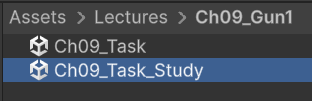
Assets/Lectures に Ch09_Task というシーンが用意されています。これをコピーして Ch09_Task_Study (名前は自由) を作成してください。
開くと以下のような XR Interaction Toolkit のサンプルのような XR Rig が用意されています。
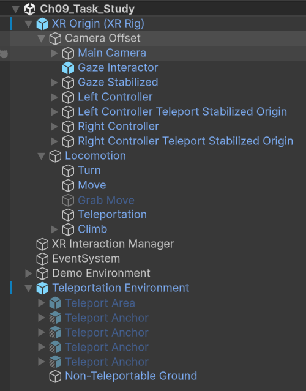
- この状態で Quest で実行できるか確認してください
ここでコントローラーが床に埋まったり、そもそも OpenXR Plugin がロードできないなどのメッセージが出ることもあります。 焦らず trableshoot-in-development-unity-vr で解決してください。
9-1-1 弾と本体
ここに関しては書籍通りです。
Scale の (X,Y,Z) に同じ値をいれる時は、X の左のリンクマークをクリックすると便利です。
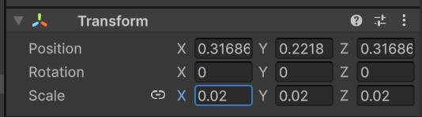
SimpleGun の Box Collider の Center/Size に値をいれる場合は、Slide/Grip の Transform の Position/Scale をコピーしてペーストすると便利です。
| Cube の Transform をコピーして | SimpleGun の Box Collider の Center にペースト |
|---|---|
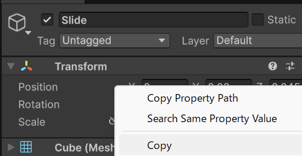 | 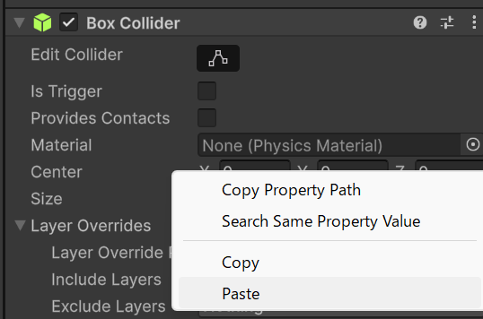 |
書籍の方では、XR Grab Interactable の方に言及はありませんが、そのままだと銃を握った時に Far 状態（レイで掴んでしまう）になるので以下のように、Near に変更しておくと銃を握った感じになります。
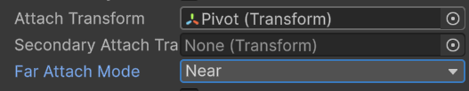
今回は Prefab は Assets/Lectures/Ch09_Gun1/Prefabs/ のフォルダを作ってそこに格納しています。
✅確認
- Quest 3 で実行して、期待通りに左手・右手で銃を握れる
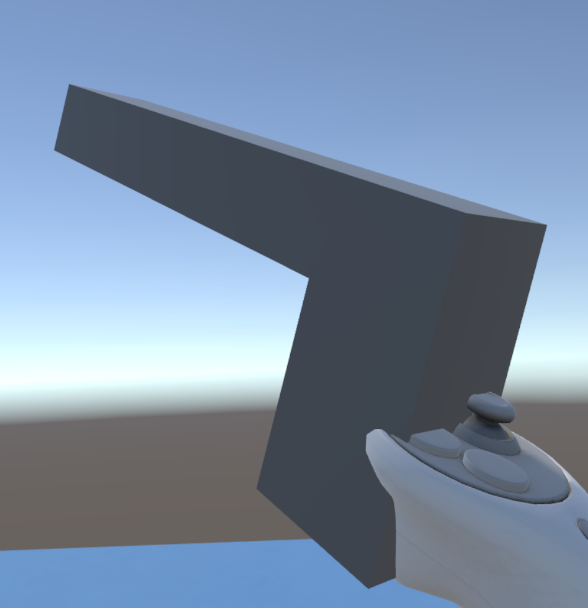
9-1-2 銃を発射できるように
スクリプトは Assets/App/Gun/Scripts/SimpleGunManager.cs に用意されているものをそのまま使う。
書籍のスクリプトの解説はしっかり読んでおきましょう。この内容は後半で薬莢の排出でも利用されています。
弾を発射する設定
書籍では、弾の発射の設定が省略されています。
以下のように SimpleGun の XR Grab Interactable の Activate イベント (人差し指トリガーを押した時) のイベントに Fire() メソッドを登録しておきます。
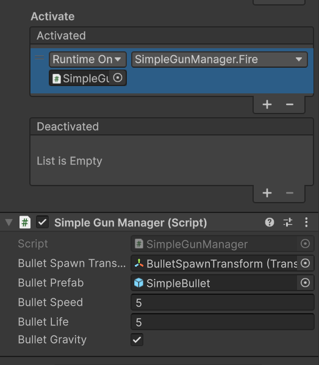
✅確認
- 銃を持って、人差し指トリガーを押すと弾が発射される
9-1-3 マガジンを装填できるように
マガジン (SimpleMagazine) は書籍通りで問題ありません。Rigidbody を付けるのは XR Grab Interactable で自動で行われるので、手動で付ける必要は無いです。
スクリプトは Assets/App/Gun/Scripts/SimpleMagazineManager.cs をコピーしてきます。
今回は ch09 のフォルダの下に Scripts フォルダを作っています。 Assets/Lectures/Ch09_Gun1/Scripts/SimpleMagazineManagerStudy.cs に配置します。
==今後もコピーしてきたものは Study の suffix を付けます==
今回は以下のように TextMeshPro 部分の削除だけです。
- // TextMeshProに数値を渡す
- public TextMeshPro TmpMagazine = null!;
-
void Start()
{
// 現時点の弾数を最大弾数に初期化
magazineBulletNumCurrent = MagazineBulletNumMax;
}
- void Update()
- {
- // TextMeshProに情報を渡すにあたって、
- // 数値を文字に変換するToString()の処理が必要
- TmpMagazine.text = magazineBulletNumCurrent.ToString();
- }
-
// Pistolに現時点の弾数を渡すGet関数
public int GetBulletNum()
{Socket の制作は Prefab の外で
書籍の書き方なのですが、すべて終わった後に突然「別の Prefab で保存」のように書かれます。
今回も MagazineSocket や SocketTransform を付与するのは SimpleGun の Prefab 内ではなく、 Hierarchy 上で行い、完成したら original prefab として保存してください。
✅確認
- Quest 3 で実行して、片手で銃を持ち、もう片方の手でマガジンを持ち装着できる
- マガジンを装着した状態で銃を離すと、銃が激しく揺れる
9-1-4 レイヤーの設定
サンプルプロジェクトを開くとすでにレイヤーの設定はできています。余計なものも入っていますが気にせずに使ってください。
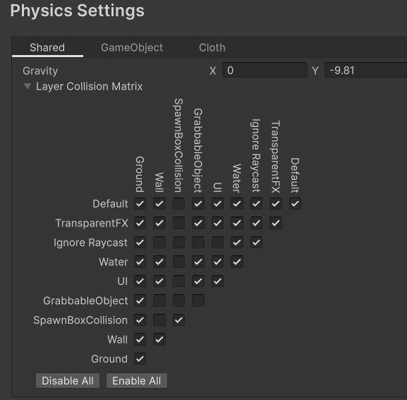
親にだけ Layer をセットする
今回は SimpleGunMagazine と SimpleMagazine の両方に GrabbableObject のレイヤーを付けます。
その際に、以下のように子オブジェクトにも付与するかの選択ダイアログが出ますが、 今回は、親オブジェクトにしか Collider を付けていないので親にだけ付与します
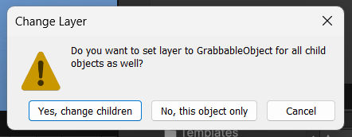
Near-Far Interactor への設定
ここは書籍に誤りがあります。
書籍には、Sphere Interaction Caster (近距離用) と Curve Interaction Caster (遠距離用) の Caster に Magazine を追加すると書かれていますが、当然ながらここは GrabbableObject を設定しないといけません。（そもそも Magazine は Physics Layer に追加していません）
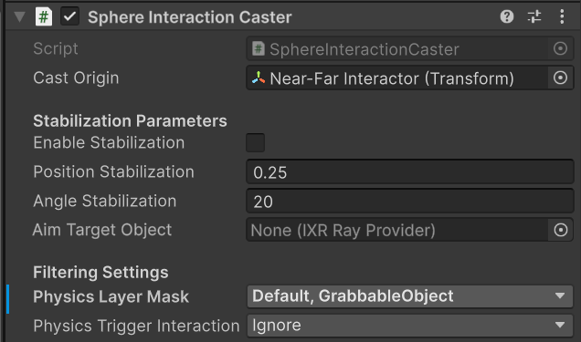 | 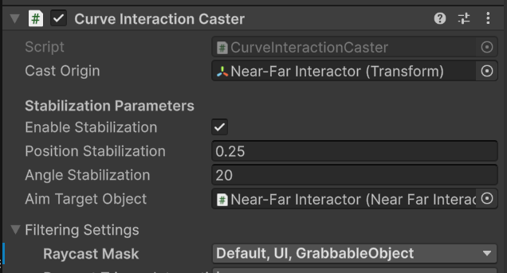 |
Interaction Layer Mask の設定
Interaction Layer もこのプロジェクトには最初から設定済です。(28 番に GrabbableObjectがありますが、利用しないので気を付けてください)
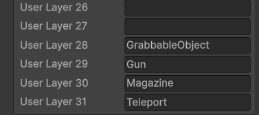
Interaction Layer と 先ほどの Physics Layer が異なることを意識しましょう。
SimpleMagazineのXR Grab InteractableのInteraction Layer MaskにMagazineを 追加- 銃の
MagazineSocketのXR Socket InteractorのInteraction Layer MaskをMagazineに置き換え
これで銃のマガジンソケットには、Magazine の Interaction Layer が設定されているものしか入らなくなります。
✅確認
- Quest 3 で実行して、片手で銃を持ち、もう片方の手でマガジンを持ち装着できる
- マガジンを装着した状態で銃を離しても銃はそのまま床に落ちる
9-1-5 / 9-1-6 マガジンと銃の連携・残弾管理
テキストでは別の節になっていますが、両方完了しないと動作確認ができないためここでは一つの節として扱います。
ソケットに入っているものを取得する
書籍では触りの説明になっていますので、少し踏み込んだ説明をします。
まず、以下が XR Socket Interactor です。
Class XRSocketInteractor | XR Interaction Toolkit | 3.5.0-pre.1
↳ MonoBehaviour
↳ XRBaseInteractor
↳ XRSocketInteractor
上記のような継承関係になっていると書かれています。（書籍では、XRSelectInteractor の継承クラスと書かれていますが、現時点では XRBaseInteractor 継承です）
また、実装 (Implements) の一覧は以下になっています。 IXRSelectInteractor があることが確認できます。
IXRHoverInteractor
IXRSelectInteractor
IXRTargetPriorityInteractor
IXRGroupMember
IXRInteractionStrengthInteractor
IXRInteractor
IXRParentInteractableLink
以下が IXRSelectInteractor です。
Interface IXRSelectInteractor | XR Interaction Toolkit | 3.5.0-pre.1
このページの最下部に Extension Methods (拡張メソッド) の一覧があります。ここに、テキストに記載のある GetOldestInteractableSelected があります。
XRInteractorExtensions.IsBlockedByInteractionWithinGroup(IXRInteractor)
XRSelectInteractorExtensions.GetOldestInteractableSelected(IXRSelectInteractor)
以下が XRSelectInteractorExteions つまり、GetOldestInteractableSelected のある拡張クラスです。
Class XRSelectInteractorExtensions | XR Interaction Toolkit | 3.5.0-pre.1
以下は GetOldestInteractableSelected の説明文の和訳です。「インタラクタブル」とは、今回のサンプルで言えば XRGrabInteractable ですね。
文章を見ると、「最年長」、つまり Oldest ですが、これは気になるところです。
現在選ばれた最年長のインタラクタブルを獲得。 これは、Interactorが一度に複数のインタラクタブルを選択することをサポートしていない場合の利便性向上の方法です。
再び、IXRSelectInteractor のページを見てもらうと、firstInteractableSelected というプロパティが見つかると思います。この説明を和訳すると以下になります。
（読み取り専用）選択状態がない場合に最初に選択されたインタラクタブル要素。 このインタラクタは現在インタラクタブル要素を選択していない可能性があります。これは、複数のインタラクタブル要素が選択されている状態でリリース操作が行われた場合に発生します。
少し分かりにくい文章ですが、要は選択されたインタラクタブルを取得できるということです。
Select と Socket
さて、Socket と Select の Interactor が出てきていますが、Select (選択) が上位であり、Socket (ソケット) は下位です。実は Select の機能を持つものは多くあります。Near-Far Interactor も同様に IXRSelectInteractor を実装しています。
ぱっと例が思いつかないのですが、Select は複数のインタラくクタブルを選択できる ことが基本となっています。つまり firstInteractableSelected で「複数のインタラクタブル要素が選択」という言及があるのはそういうことです。
一方で Socket は明確に「インタラクタブルは一つ」と限定されています。マガジンを複数配置して、複数のマガジンを入れようとしても既に入っている場合には入りません。
試してみた限りでは firstInteractableSelected でもマガジンの入れ替え時も問題無くソケットに入っている（つまり選択されている）オブジェクトを取得できました。
一方で、GetOldestInteractableSelected の説明にもあるように「これは、Interactorが一度に複数のインタラクタブルを選択することをサポートしていない場合の利便性向上の方法です」とあるので、ソケットではこれを使うのが最適なのではと思います。
ソケットにあるものをチェックするスクリプト
書籍では P209 のスクリプトです。
Assets/App/Gun/Scripts/SocketDetection.cs がベースとして使えます。（SocketDetectionMagazine という書籍のコードと同じ名前のファイルがありますが、こちらは内容が異なります）
今回はコピーして SocketDetectionStudy という名前に変更して利用しています。(“Assets/Lectures/Ch09_Gun1/Scripts/SocketDetectionStudy.cs`)
また、そのままでは利用できないため以下のように Update の内部の XrgInt の利用箇所をコメントアウトしてください。
public class SocketDetectionStudy : MonoBehaviour
{
void Update()
{
// ソケットは利き手を判定する情報を持たないので
// 銃の利き手の情報をソケットで再利用する
// 銃が右手で持たれているときは、ソケットはAボタンに反応する
// if (GunManager.XrgInt.IsSelectedByRight() && InputManagerLR.PrimaryButtonR_OnPress())
// {
// ForceEjectSocket();
// }
//
// // 銃が左手で持たれているときは、ソケットはXボタンに反応する
// if (GunManager.XrgInt.IsSelectedByLeft() && InputManagerLR.PrimaryButtonL_OnPress())
// {
// ForceEjectSocket();
// }この状態で動作確認を行うために以下のように MagazineSocket にアタッチして、Magazine Socket のみ Inspector で設定し、XR Socket Interatctor の Select/Select Exited の両イベントに、SocketCheck メソッドを呼び出すようにします。
| XR Socket Interactor の Select に設定 | |
|---|---|
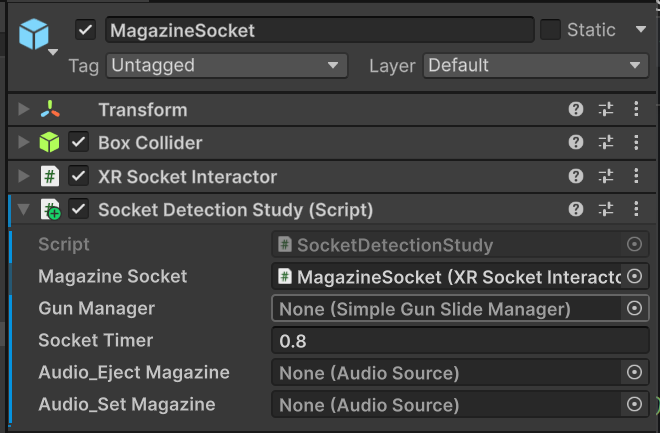 | 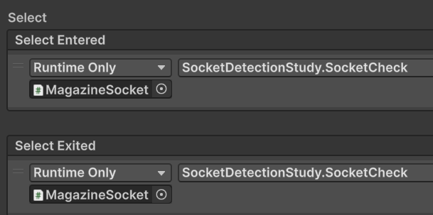 |
⚠️ 書籍では、SendSocketInfo メソッドも同様に呼び出すように指示されますが、この時点ではまだ銃のスクリプトが完成していないためエラーが発生します。
✅確認
- Quest 3 で実行して、片手で銃を持ち、もう片方の手でマガジンを持ち装着できる
- マガジンを装着した時と外した時に以下のログが出る。
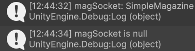
何をチェックしたか？
Select/Select Exited イベントで呼び出すようにした SocketCheck メソッドはコメントを外すと以下のみです。
// Socketの情報を格納する変数
public XRSocketInteractor MagazineSocket; // Inspector から MagazineSocket オブジェクトを設定している
// スクリプト内でソケット内のゲームオブジェクトの情報を保つ
IXRSelectInteractable socketObject;
public void SocketCheck()
{
socketObject = MagazineSocket.GetOldestInteractableSelected();
if (socketObject != null)
{
Debug.Log($"magSocket: " + socketObject.transform.gameObject.name);
}
else
{
Debug.Log("magSocket is null");
}
}ここまで見てきたように、MagazineSocket は XR Socket Interactor であるため、ソケットに入っているオブジェクトを GetOldestInteractableSelected メソッドで取得できます。
これは Update で毎フレームチェックもできますが、XR Socket Interactor の Select/Select Exited イベントでのみチェックすることで、ソケットの内容に変更があった時のみ呼び出すことができます。
よって、ログには、ソケットにマガジンが入った時には「マガジンのオブジェクト名」が入り、マガジンが取り出された時には「 magSocket is null」が記録されているのです。
銃とマガジンの連携をさせるスクリプト
書籍では P214 のスクリプトです。
Assets/App/Gun/Scripts/SimpleGunMagazineManager.cs がベースとして使えます。
今回はコピーして SimpleGunMagazineManagerStudy という名前に変更して利用しています。(“Assets/Lectures/Ch09_Gun1/Scripts/SimpleGunMagazineManagerStudy.cs`)
このままでは使えないため以下のようにコードを追加します。銃についている XR Grab Interactable を使えるようにするようです。
(これは Assets/App/Gun/Scripts/SimpleGunSlideManager.cs を部分的に切り取ってきています。)
public class SimpleGunMagazineManagerStudy : MonoBehaviour
{
// Magazine関連
// Magazineの情報をキャッシュ（一時保存）
public GameObject MagazineCache;
+
+ public XRGrabInteractable XrgInt;
+ void Start()
+ {
+ // GameObject自身にあるXR Grab Interactableを呼び出す
+ XrgInt = GetComponent<XRGrabInteractable>();
+ }
public void PullTrigger()勘の良い方は気付いたかもしれませんが、これは先程の SocketDetectionStudy の方でコメントアウトした内容にリンクします。よって、そちらも変更します。
public class SocketDetectionStudy : MonoBehaviour
{
- public SimpleGunSlideManager GunManager;
+ public SimpleGunMagazineManagerStudy GunManager;
void Update()
{
// ソケットは利き手を判定する情報を持たないので
// 銃の利き手の情報をソケットで再利用する
// 銃が右手で持たれているときは、ソケットはAボタンに反応する
// ✅ 以下はコメントを戻す
if (GunManager.XrgInt.IsSelectedByRight() && InputManagerLR.PrimaryButtonR_OnPress())
{
ForceEjectSocket();
}
// 銃が左手で持たれているときは、ソケットはXボタンに反応する
if (GunManager.XrgInt.IsSelectedByLeft() && InputManagerLR.PrimaryButtonL_OnPress())
{
ForceEjectSocket();
}これで終わりではありません。さらに InputManagerLR というのが上記のコードにあるのに気づいたと思います。当然、これは初めて登場しています。（書籍の方では、だいぶ前の方の章で出てくるのですが、この章での配置には触れられていません。）
InputManagerLR
Assets/App/Gun/Scripts/InputManagerLR.cs にあるので、直接 Hierarchy にドラッグドロップして GameObject を作ってしまってください。
さらに、その Actioin Asset には Assets/App/Gun/Input/InputVRButton.inputactions の Input Action Asset を登録します。これで、コントローラの ABXY ボタンを使えるようになります。
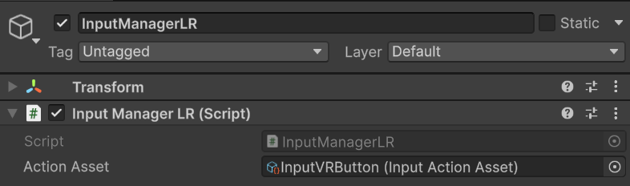
銃スクリプトの入れ替えとマガジンへの登録
さて、スクリプトとしては SimpleGunMagazineManagerStudy を作ったのですが、これは本来銃に割り当てるべきものです。
Simple Gun Managerを無効化し、Simple Gun Magazine Manager StudyをアタッチSimple Gun Managerと同じプロパティを Inspector でセットXR Grab Interactableの Activated イベントをSimpleGunManager.FireからSimpleGunManager.PullTriggerに変更するSimple Gun Mangagerを削除する
| XR Grab Interactable の Activate イベント | |
|---|---|
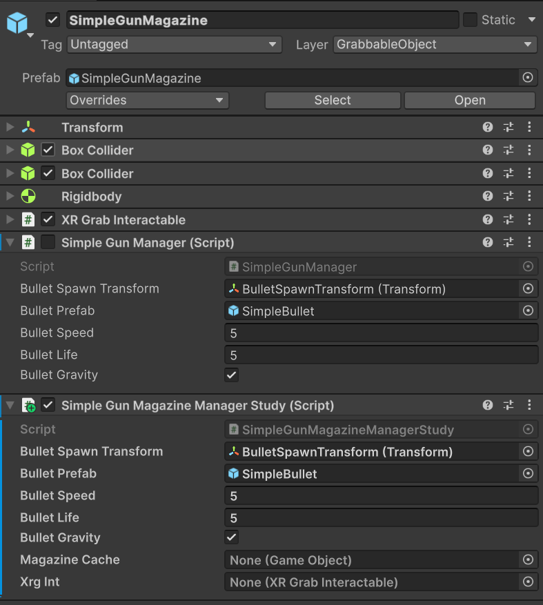 | 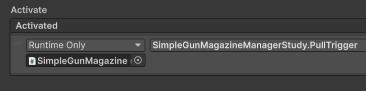 |
最後に MagazineSocket に SimpleGunMagazine オブジェクトをセットします。 |
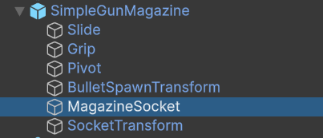 | 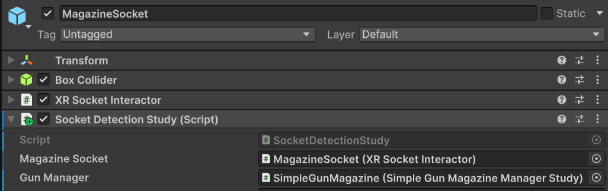 |
|---|
✅確認
- Quest 3 で実行して、片手で銃を持ち、もう片方の手でマガジンを持ち装着できる
- 右手で持った時には「A」、左手で持ったときには「X」を押すとマガジンを排出できる
- 弾を発射しようとしても発射できない
残弾を反映させる
ここに関しては追加のスクリプト等はありません。すでに SimpleMagazineManagerStudy はマガジンのオブジェクトについているはずです。では、なぜ弾が出ないのでしょうか？
Fire メソッドから変った PullTrigger メソッドを確認してみましょう。
public class SimpleGunMagazineManagerStudy : MonoBehaviour
{
public void PullTrigger()
{
if (MagazineCache == null)
{
Debug.Log(gameObject.name + "のマガジンがnullなので撃てない");
Blank();
return;
}
Debug.Log("SocketMagがnullではない");
if (MagazineCache.TryGetComponent<SimpleMagazineManager>(out var socketMag))
{
// 弾が1発未満のときは、撃てない
if (socketMag.GetBulletNum() < 1)
{
Debug.Log(socketMag.gameObject.name + "は撃てない、弾の数が" + socketMag.GetBulletNum());
Blank();
}
else
{
socketMag.SetBulletNum(socketMag.GetBulletNum() - 1);
Debug.Log(socketMag.gameObject.name + "は撃った、弾の数は" + socketMag.GetBulletNum());
Fire();
}
}
}まず、MagazineCache == null の条件に関してです。
「ソケットにあるものをチェックするスクリプト」の部分で動作確認を行い、少なくとも MagazineSocket (SocketDetectionStudy) ではソケットにはいったマガジンを認識できていました。
しかし、ここは銃側のスクリプトです、実はまだ銃の方にマガジンの情報が渡ってきていません
ここで、先程は意図的にスキップしていた MagazineSocket の XR Socket Interactor の Select/SelectExited に設定するもう一つのメソッドである SendSocketInfo を追加します。
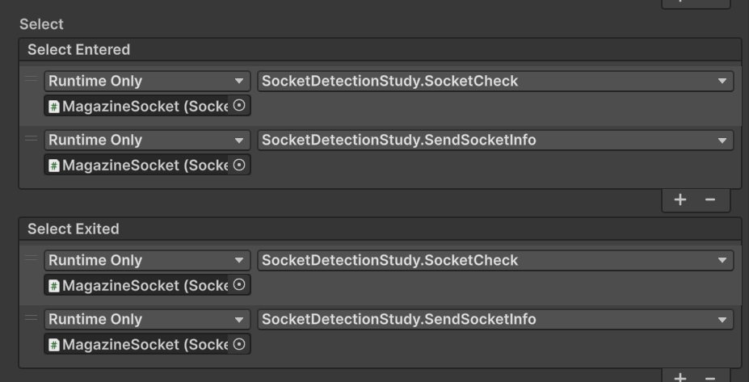
続いて、その次の行ですね。
if (MagazineCache.TryGetComponent<SimpleMagazineManager>(out var socketMag))はい SimpleMagazineManager ではなく SimpleMagazineManagerStudy に名前を変更して使っているからです。GetComponent ではなく TryGetComponent なのでいきなりエラーでクラッシュしないのですが、マガジンを取得できていないので弾が撃てないのです。
ということで以下のように変更します。
if (MagazineCache.TryGetComponent<SimpleMagazineManagerStudy>(out var socketMag))✅確認
- Quest 3 で実行して、片手で銃を持ち、もう片方の手でマガジンを持ち装着できる
- マガジンが入っていれば弾を発射できる
- 弾は一定数発射するとそれ以上は発射できない
- 別のマガジンに入れ替えれば、再度一定数発射できる
※一定数はマガジンに設定している Magazine Bullet Num Max です。
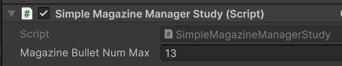
どうやって銃にマガジンの情報を伝えているか
先ほど MagazineSocket の XR Socket Interactor の Select/SelectExited に設定した SendSocketInfo を確認します。
public class SocketDetectionStudy : MonoBehaviour
{
public void SendSocketInfo()
{
if (!GunManager)
{
Debug.Log(gameObject.name + "のSocketの親となる銃が登録されていません");
}
// ソケットに挿入されたマガジンの情報を銃本体に送る
if (socketObject != null)
{
GunManager.MagazineCache = socketObject.transform.gameObject;
}
else
{
Debug.Log(gameObject.name + "のSocketの中のゲームオブジェクトはnullです");
}
}GunManager は銃 (SimpleGunMagazineManager) 、socketObject は IXRSelectInteractable つまり、ソケットに接続されるマガジン (SimpleMagazineManagerStudy) です。
socketObject はすでに確認した通り、 SocketCheck メソッドでソケットにマガジンが入った時点でマガジンのオブジェクトがセットされます。
つまり以下のフローです。
- マガジンがソケットに挿れられる
SelectイベントでSocketCheckが呼び出され、socketObjectにマガジンのオブジェクトが入るSelectイベントでSendSocketInfoが呼び出され、 銃のMagazineCacheにマガジンのオブジェクトが入る
この２つのイベントの機能でソケットのマガジン情報が、銃に伝わってくることになります。
マガジンの強制排出
public class SocketDetectionStudy : MonoBehaviour
{
void Update()
{
// ソケットは利き手を判定する情報を持たないので
// 銃の利き手の情報をソケットで再利用する
// 銃が右手で持たれているときは、ソケットはAボタンに反応する
if (GunManager.XrgInt.IsSelectedByRight()
&& InputManagerLR.PrimaryButtonR_OnPress())
{
ForceEjectSocket();
}
// 銃が左手で持たれているときは、ソケットはXボタンに反応する
if (GunManager.XrgInt.IsSelectedByLeft()
&& InputManagerLR.PrimaryButtonL_OnPress())
{
ForceEjectSocket();
}
// ForceEjectSocketを実行したら、ソケットの当たり判定を無効化するタイマーを用意する
if (isForceEject)
{
timer += Time.deltaTime;
}
// タイマーが指定時間を超えたら、ソケットの当たり判定を復活させる
if (timer > SocketTimer)
{
Debug.Log("Socket復活");
timer = 0.0f;
isForceEject = false;
transform.GetComponent<BoxCollider>().enabled = true;
}
}
public void ForceEjectSocket()
{
if (socketObject == null)
{
Debug.Log("socketの中身がnullなので強制排出できない");
return;
}
// 特定の条件でソケットを強制無効化、中身を排出
Debug.Log("ForceEjectSocket実行");
MagazineSocket.interactionManager.SelectExit(MagazineSocket, socketObject);
transform.GetComponent<BoxCollider>().enabled = false;
isForceEject = true;
// Socketからマガジンの情報を強制的に削除
ResetSocketInfo();
}
public void ResetSocketInfo()
{
// マガジンを強制イジェクトしたときに
GunManager.MagazineCache = null;
socketObject = null;
Debug.Log("Socket情報をリセット");
}右手・左手の制御に関しては書籍を参照してください。
強制排出のコアである ForceEjectSocket を確認していきましょう。
XRInteractionManager#SelectExit
重要なのは MagazineSocket.interactionManager.SelectExit です。
interactionManager は XR Socket Interactor の継承元のクラスである XR Base Interactor のプロパティです。 XRInteractionManager を取得できます。
Class XRBaseInteractor | XR Interaction Toolkit | 3.5.0-pre.1
SelectExit は XRInteractionManager のメソッドです。
Class XRInteractionManager | XR Interaction Toolkit | 3.3.1
説明の日本語訳です。そのままで選択終了をトリガーするようです。これにより、マガジンが自動的に選択状態を終了し排出されたように見えます。
インタラクターによるインタラクタブルの選択終了処理を開始します。
しかし、これだけだと実際にはマガジンは排出できません
ソケット用の BoxCollider の制御
transform.GetComponent<BoxCollider>().enabled の true/false の切り替えも２個所があるのが確認できます。
この BoxCollider は以下のものです。これが有効だとソケットに反応してマガジンが装着されます。
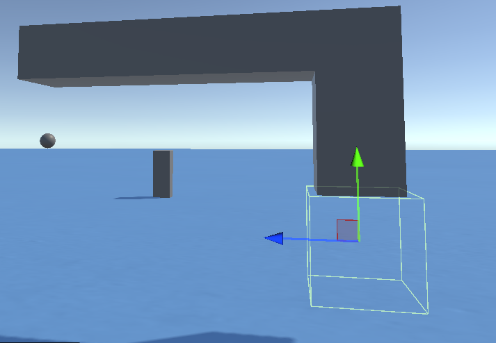 | 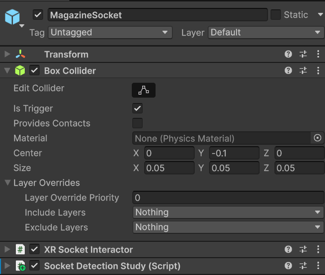 |
|---|
つまり、この Collider が有効だと、SelectExit で選択状態を終了し排出されたマガジンが、その瞬間にこの Collider に引っかかって、再びソケットに入った状態になってしまいます
よって、ForceEjectSocket で BoxCollider を無効にし、行って時間後に再び有効にすることで、またマガジンを挿し込めるようにしているのです。
✅ ここまでで 9-1 は終了です。
以下に 9-1 終了時点での tag を付けてあるので、不明点がある場合は参照してみてください。 Release finished_9-1 · self-taught-code-tokushima/VRLearningBook-ch9
9-2-1 銃の構造を理解しよう
そもそも「スライド」「チャンバー (薬室)」について意味が分からないという場合もあると思うので、以下の数分の動画を見ると分かりやすいです。
この書籍で再現される動きは主に以下です。
- マガジンを挿れたらスライドを引く
- 引かなければ弾が撃てる状態にならない
- 弾が全弾撃ち終わったらスライドが後ろに下がる
- マガジンを変えなければいけない
この動画のハンドガンでは、一発撃つたびにスライドが後ろに下がって弾を押し出す動きがありますが、この書籍の場合はそこまでは再現しません。
9-2-2 排莢 (はいきょう) 処理を作ろう
- 排出される薬莢
SimpleCaseは書籍通りに作ってください。 - 排莢場所である
CaseSpawnTransformも書籍通りに作ってください。
ここから、排莢処理と、チャンバー (薬室) の処理を作るのですが、このスクリプトは書き上げても動きません。(P225 にそのように書かれています)
完全なスクリプトや Prefab のサンプルが GitHub のサンプルコードにも存在しません。同じような名前のものはあるのですが、書籍とはところどころ異なっており、不慣れな場合には再現が難しいかもしれません。
よって、ここからは順番を変えていきます。
9-2-2/9-2-3/9-2-4
スライドを持って動かせるようにする
まずは「スライドが引ける」という見た目の部分からです。 9-2-4 節の冒頭に移動してください。
9-2-2 の冒頭で SimpleGunMagazine から新しい Prefab である SimpleGunSlide を作っていると思います。
そこに P225 の変更点を適用します。
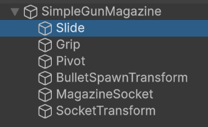 | 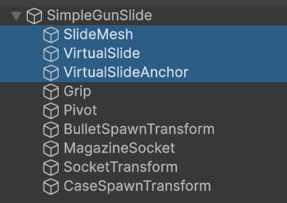 |
|---|
Slideを Rename しSlideMeshにSlideMeshを複製し、VirtualSlideを作成Emptyを作成し、VirtualSlideAnchorとし、Position はVirtualSlideと同じに
| Slide | VirtualSlide | VirautlSlideAnchor |
|---|---|---|
| 見た目のスライド | 実体のスライド | VirtualSlide の移動量計測 |
| 「見た目」と「実体」に関してですが、メッシュがあるのが「見た目」、コリジョンがあるのが「実体」という意図だろうと思います。 |
そして P226 の設定です。
| SimpleGunSlide (XR Grab Interactable) | |
|---|---|
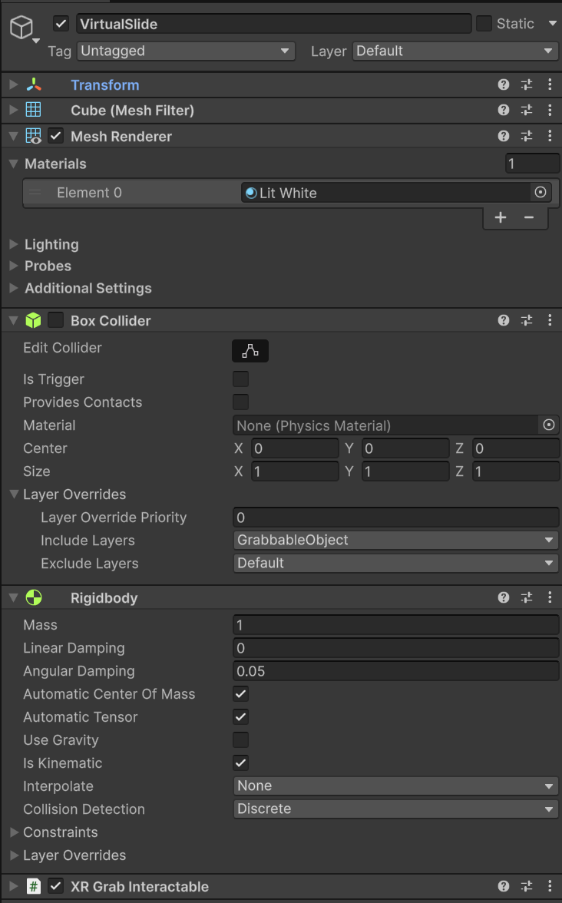 | 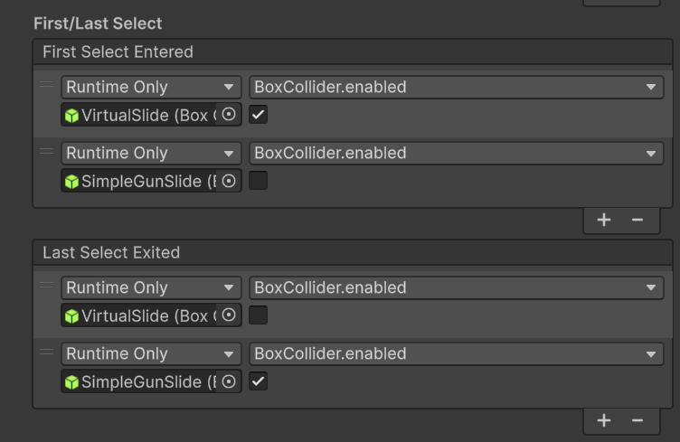 |
VirtualSlideは見た目は不要なのでMesh Rendererは無効化する予定だが、ここではそのままにしてどのように動くか確認する。- ここでは異なるマテリアル (
Lit_White)で色を変えている
- ここでは異なるマテリアル (
- Rigidbody は指定通り Kinematic / no gravity にする
- ==VirtualSlide の
BoxColliderはもし、削除してしまっていたら再度追加して Layer Override の設定をする==
✅確認
- Quest 3 で実行して、片手で銃を持ち、もう片方の手でスライド部分を持つと、
VirtualSlideが移動する - 移動した
VirtualSlideは空中で固定される (銃の動きには追随する)
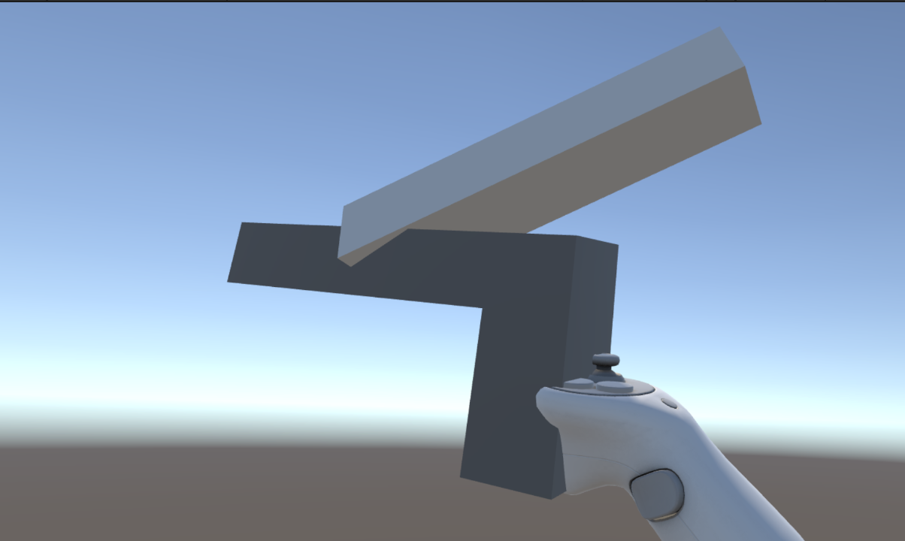
ここまでで、実体のスライドを動かせるようになったことが確認できました。
スライドを離したら戻るようにする
スライドを掴むプレイヤーの手の位置の取得
P226 にある GrabInteractableHandler がその役割です。
サンプルにある Assets/App/Gun/Scripts/GrabInteractableHandler.cs が使えるので、それを VirtualSlide にアタッチします。
実行すると、以下のようなログが確認できます。
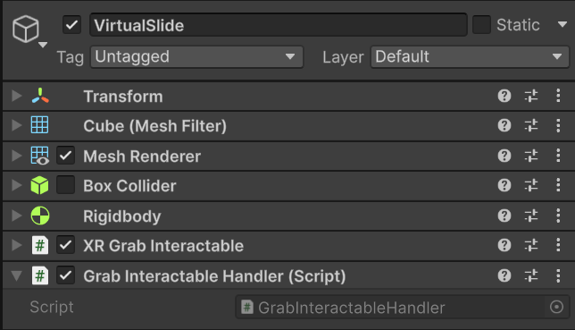 | 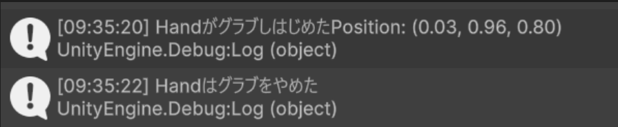 |
|---|
書籍では解説されていませんが、 GrabInteratableHandler は Awake で以下のように Select Entered/Exited にイベントを登録しています。
void Awake()
{
grabInteractable = GetComponent<XRGrabInteractable>();
// AddListenerを使うことによって、プレイヤーがエディターで指定しなくても
// 指定のオブジェクトのイベントにスクリプトで用意した関数を追加、実行できる
grabInteractable.selectEntered.AddListener(OnSelectEntered);
grabInteractable.selectExited.AddListener(OnSelectExited);
}先ほど、マガジンの排出処理 (SocketDetectionStudy#ForceEjectSocket) で XRInteractionManager#SelectExit を呼び出して強制的に Select Exit を起こしたのとは対照的です。
ただ、これに関しては XR Grab Interactable のイベントに Inspector から設定しても同じことができます。
Inspector から付け変える必要もないのであれば、このようにスクリプトからセットした方が設定し忘れも無く便利ですね。
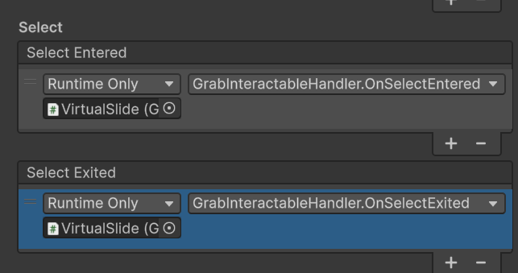
スライドを掴んだ場合と離した場合の処理
P228 の SimpleSlideManager ですが、サンプルにもスクリプトはあるのですが、まずは必要な部分だけにします。
ということで、SimpleSlideManagerStudy という新しいクラスを作ります。
そこに、SimpleSlideManager の一部をコピーしてきます。
public class SimpleSlideManagerStudy : MonoBehaviour
{
bool isGrabbed;
public GameObject ParentGun = null!;
public GameObject SlideBody = null!;
public GameObject VirtualAnchor = null!;
bool isSlidePullBack;
public GrabInteractableHandler GIHandler;
public void Grabbed()
{
Debug.Log($"SimpleSlideが手につかまれた");
isGrabbed = true;
// GrabInteractableHanderを解説する
if (GIHandler)
{
Transform handTransform = GIHandler.GetHandTransform();
if (handTransform)
{
// 取得したhandTransformを使用する処理
Debug.Log("Using Grab Transform: " + handTransform.position);
// _grabPos = handTransform.position;
}
}
}
public void Released()
{
Debug.Log($"SimpleSlideが手から離された");
isGrabbed = false;
// プレイヤーが手を離したら初期化する
// 手を離したときに親を初期化する
var slideSelf = gameObject;
slideSelf.transform.parent = ParentGun.transform;
slideSelf.transform.position = VirtualAnchor.transform.position;
slideSelf.transform.rotation = VirtualAnchor.transform.rotation;
// スライドの位置も初期化する
// slideBody.transform.localPosition = Vector3.zero;
if (isSlidePullBack)
{
SlideBody.transform.localPosition = VirtualAnchor.transform.localPosition;
Debug.Log("SlidePullBackTrue");
}
else
{
SlideBody.transform.localPosition = VirtualAnchor.transform.localPosition;
Debug.Log("SlidePullBackFalse");
}
}
}このスクリプトを VirtualSlide に設定し、Inspector からプロパティの設定をします。
また P237 にあるように Grabbed/Released のイベントも紐づけます。
| Inspector からの設定 | VirtualSlide (XR Grab Interactable) |
|---|---|
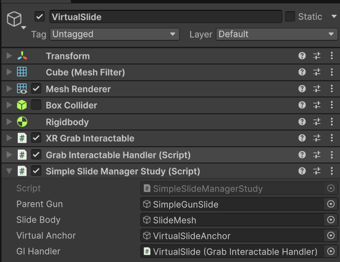 | 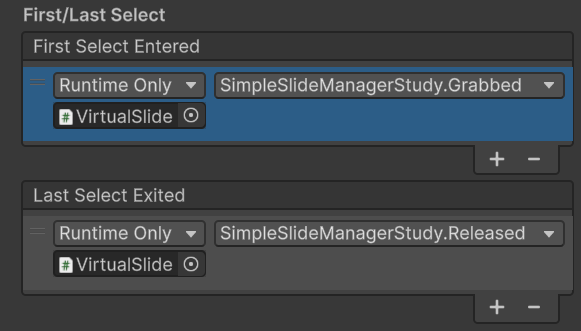 |
✅ 確認
- Quest 3 で実行して、片手で銃を持ち、もう片方の手でスライド部分を持つと、
VirtualSlideが移動する - 移動した
VirtualSlideは手を離すと元の位置に戻る- 現在は VirtualSlide もメッシュがあるので、SlideMesh のメッシュと重なったようになる
Grabbed と Released
この時点のこれらのメソッドは多くのことはしていません。ログ出力を除けば以下のみです。
GrabbedisGrabbedをtrueにするGIHandler(GrabInteractableHandler) を使って、掴んだ位置を取得しているが使っていない
ReleasedisGrabbedをfalseにする- 自身 (
VirtualSlide)の場所・回転をVirtualSlideAnchorに合わせる (つまり、元の位置に戻す)
しかも、この時点では、isGrabbed も使ってはいないので、以下のようにコードを書き換えても同じ挙動が実現できます。
public void Grabbed()
{
}
public void Released()
{
var slideSelf = gameObject;
slideSelf.transform.position = VirtualAnchor.transform.position;
slideSelf.transform.rotation = VirtualAnchor.transform.rotation;
}見た目のスライドも動かす
SimpleSlideManagerStudy に対して、さらに SimpleSlideManager からコードを移してきます。
GrabUpdateが見た目のスライドを動かしている部分なので、これをコピーしてくるGrabUpdateを使っているのはUpdateなので、UpdateのGrabUpdate利用部分までをコピーしてくる- 必要な変数をコピーしてくる
public class SimpleSlideManagerStudy : MonoBehaviour
{
bool isGrabbed;
Vector3 handPos = Vector3.zero;
public GameObject ParentGun = null!;
public GameObject SlideBody = null!;
public GameObject VirtualAnchor = null!;
// public TextMesh testNumbers = null!;
float distanceFloat;
public float DistanceLimitNegative = -0.01f;
public float AnchorDistanceMin = -0.025f;
public float AnchorDistanceMax;
bool isSlidePullMax;
bool isSlidePullBack;
public GrabInteractableHandler GIHandler;
private void Update()
{
if (GIHandler)
{
Transform handTransform = GIHandler.GetHandTransform();
if (handTransform)
{
// 取得したhandTransformを使用する処理
Debug.Log("Using Hand Transform: " + handTransform.position);
// 例: 手の位置にオブジェクトを移動
handPos = handTransform.position;
}
}
// プレイヤーにつかまれているときだけ動くUpdateを別途用意する
if (isGrabbed)
{
GrabUpdate();
}
}
void GrabUpdate()
{
// 現在の手の位置と銃のスライドのアンカーの差分を出す
var anchorTransform = VirtualAnchor.transform;
var anchorPos = VirtualAnchor.transform.position;
var distance = anchorPos - handPos;
// 差分ベクトルをスライドの方向にのみ抽出する
// 正射影ベクトルのProjectを用いて、ピストルのスライドに対する手の位置の正射影を求める
var normalVector3 = Vector3.Project(distance, anchorTransform.forward);
// distanceFloat（スライドの稼働範囲計算）はプレイヤーに捕まれているときのみ行う
// distanceFloatの初期値はゼロ
// 銃口の向きと「手の位置-銃口」ベクトルの角度が90度を越えていると、向きを反転する
// この処理を入れると、距離を絶対値でなく正負で取得できるようになる
if (Vector3.Angle(anchorTransform.forward, distance) < 90.0f)
{
distanceFloat = normalVector3.magnitude * -1.0f;
Debug.Log("Over90 distanceFloat: " + distanceFloat);
}
else
{
distanceFloat = normalVector3.magnitude;
Debug.Log("Under90 distanceFloat: " + distanceFloat);
}
// スライダーの可動範囲を制限する
// スライダーが後ろの限界よりも後ろにあるとき
if (distanceFloat < AnchorDistanceMin)
{
distanceFloat = AnchorDistanceMin;
isSlidePullMax = true;
Debug.Log("distanceFloat, anchorMin: " + distanceFloat);
}
// スライドを前方向の限界よりも前に引っ張っているとき & スライドが後ろに引かれていないとき
else if (distanceFloat > AnchorDistanceMax && !GetSlidePullBack())
{
distanceFloat = AnchorDistanceMax;
Debug.Log("distanceFloat, anchorMax: " + distanceFloat);
}
// スライドを前方向の限界よりも前に引っ張っているとき & スライドが後ろに引かれているとき
else if (distanceFloat > DistanceLimitNegative && GetSlidePullBack())
{
distanceFloat = DistanceLimitNegative;
Debug.Log("distanceFloat, disNegative: " + distanceFloat);
}
else
{
Debug.Log("distanceFloatは可動範囲内のはず, distanceFloat: " + distanceFloat);
}
Debug.Log($"slideBody.normalVector3: {normalVector3}, magnitude: {normalVector3.magnitude}");
// ⭐見た目のスライドを動かす
SlideBody.transform.localPosition = VirtualAnchor.transform.localPosition + new Vector3(0, 0, distanceFloat);
Debug.Log(
$"slideBody.transform.localPosition: {SlideBody.transform.localPosition}, WorldPos: {SlideBody.transform.position}");
Debug.Log("DistanceFloat: " + distanceFloat);
}
public bool GetSlidePullBack()
{
return isSlidePullBack;
}
// 以下はこれまで通り
public void Grabbed() { }
public void Released() { }✅ 確認
- Quest 3 で実行して、片手で銃を持ち、もう片方の手でスライド部分を持つと、
VirtualSlideが移動する -
VirtualSlideを一定後ろに移動させると、SlideMeshも少しだけ後方に並行移動する-
VirtualSlideをどれだけ後ろに下げても下がる距離は同じ
-
-
VirtualSlideを離すとSlideMeshも元の位置に戻る
| 見た目のスライドも少しだけ後ろに下がる | |
|---|---|
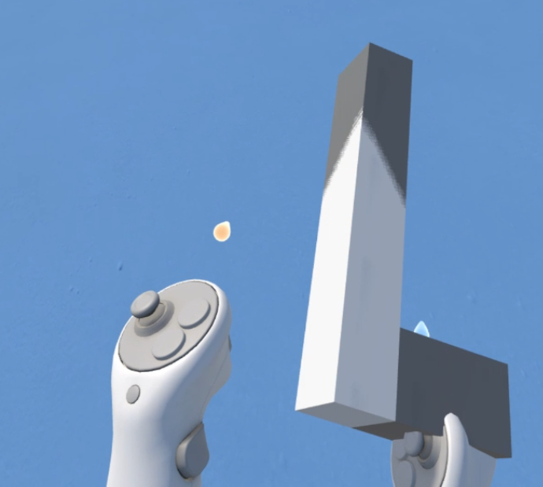 | 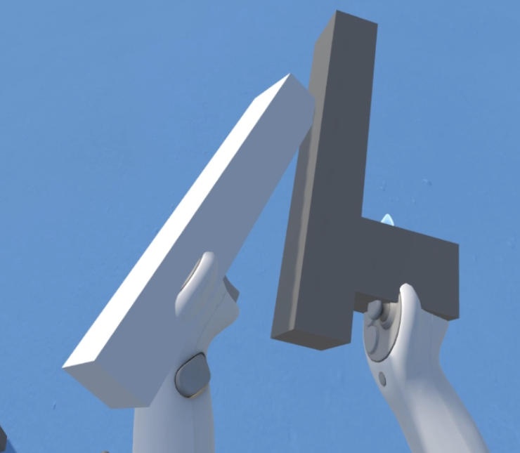 |
どのように見た目のスライドが動いているか
private void Update()
{
Transform handTransform = GIHandler.GetHandTransform();
if (handTransform)
{
handPos = handTransform.position;
}
if (isGrabbed) // Grabbed() で掴まれたと判定されたとき
{
GrabUpdate();
}
}
void GrabUpdate()
{
// 現在の手の位置と銃のスライドのアンカーの差分を出す
var anchorTransform = VirtualAnchor.transform;
var anchorPos = VirtualAnchor.transform.position;
var distance = anchorPos - handPos;
// 差分ベクトルをスライドの方向にのみ抽出する
// 正射影ベクトルのProjectを用いて、ピストルのスライドに対する手の位置の正射影を求める
var normalVector3 = Vector3.Project(distance, anchorTransform.forward);
// スライドは後ろに引かれている
distanceFloat = normalVector3.magnitude * -1.0f;
// スライダーが後ろの限界よりも後ろにあるとき
if (distanceFloat < AnchorDistanceMin)
{
distanceFloat = AnchorDistanceMin;
isSlidePullMax = true;
}
// ⭐見た目のスライドを動かす
SlideBody.transform.localPosition
= VirtualAnchor.transform.localPosition
+ new Vector3(0, 0, distanceFloat);
}ログや「前に引いている場合」などの分岐を除くと上記のようなコードで表現できます。
UpdateでGrabInteractableHandlerを使って、「手が掴んでいる位置」を取得しhandPosに代入し続けるVirtualSlideが掴まれた時、GrabUpdateが呼ばれるGrabUpdateVirtualSlideAnchorの位置、つまり元の位置 (anchorPos) と、現在VirtualSlideを掴んでいる手の位置 (handPos) のベクトルの差分を出す。- これで、
handPosからanchorPosへののベクトルが得られます
- これで、
- 1 の結果と、
VirtualSlideAnchorのforwardつまりピストルの前方との Project を取ることで、「元の位置から、現在の手の位置までのベクトルを、ピストル前方方向に投影した成分のベクトル」を得ることができます。 - 今回は後ろに引いている、つまりピストルの前方とは逆方法なので
-1.0fして、magniture（ベクトルの大きさ）を取得します - 後ろに引く限界位置 (
AnchorDistanceMin) より引いている場合は、その位置に置き換える SlideBody(つまりSlideMesh) のローカル位置を、元の位置から計算したdistanceFloat分だけずらす (Z方向、かつ 3 でマイナスしているのでピストルとしては後方に移動するということになる)
薬莢排出とリロードの完成
さて、ここでようやく P220 の薬莢排出（排莢）の処理に戻ることができます。
SimpleGunSlideManagerStudy の追加
P220 の SimpleGunSlideManager を書いていくのですが、これは Assets/App/Gun/Scripts/SimpleGunSlideManager.cs が使えます。
ただ、そのままでは使えないので、これもコピーして SimpleGunSlideManagerStudy として使いましょう。
以下の箇所だけ変更します。
public class SimpleGunSlideManagerStudy : MonoBehaviour
{
bool isChamberFill;
// スライドを管理する
- public SimpleSlideManager Slide = null!;
+ public SimpleSlideManagerStudy Slide = null!;
public XRGrabInteractable XrgInt;
@@ -210,7 +210,7 @@ namespace App.Samples.Gun
}
// マガジンが挿さっている場合
- if (MagazineCache.TryGetComponent<SimpleMagazineManager>(out var magazine))
+ if (MagazineCache.TryGetComponent<SimpleMagazineManagerStudy>(out var magazine))
{
// マガジンの残弾数が0以上のとき
if (magazine.GetBulletNum() > 0)SimpleSlideManagerStudy の完成
コピーできたら内部を直す前に、SimpleSlideManagerStudy を完成させてしまいましょう。
これは Assets/App/Gun/Scripts/SimpleSlideManager.cs の class の内部をそのままコピーしてしまいます。
実際には ReloadStateManager といくつかの小さなメソッドだけなのですが、面倒なので全体をコピペでいいです。
ただし、以下の箇所だけ変更します。
public class SimpleSlideManagerStudy : MonoBehaviour
void ReloadStateManager()
{
- var gunBody = ParentGun.GetComponent<SimpleGunSlideManager>();
+ var gunBody = ParentGun.GetComponent<SimpleGunSlideManagerStudy>();SocketDetectionSlideStudy の追加
ここまで MagazineSocket で利用してきた SocketDetectionStudy ですが、SimpleMagazineManager を利用しているため、一応新しく SocketDetectionSlideStudy としてコピーして追加します。
といっても以下を変更するだけです。
public class SocketDetectionSlideStudy : MonoBehaviour
{
- public SimpleGunMagazineManagerStudy GunManager;
+ public SimpleGunSlideManagerStudy GunManager;Inspector の参照の変更
クラスの入れ替えはもちろん、それに関してプロパティやイベントの参照の入れ替えが発生します。
| SimpleGunSlide (Manager の入れ替え) | XR Grab Interactor で呼び出しクラス変更 |
|---|---|
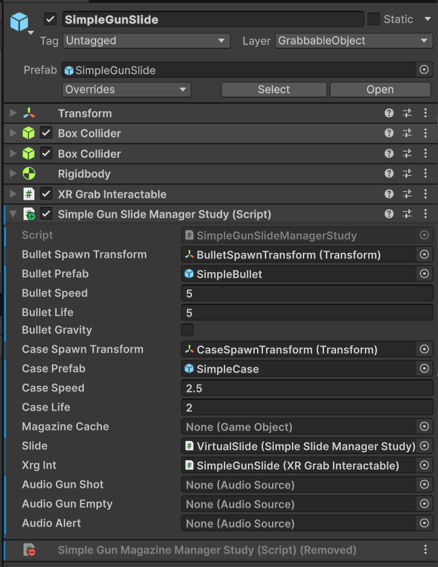 | 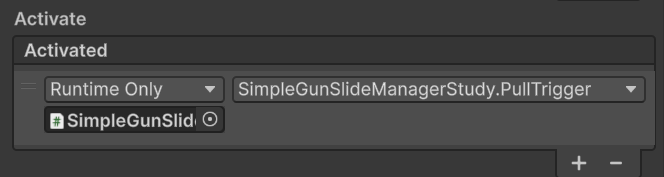 |
| MagazineSocket の Socket Detection 入れ替え (Gun Manager プロパティも変更される) | XR Grab Interactable で呼び出しクラス変更 |
|---|---|
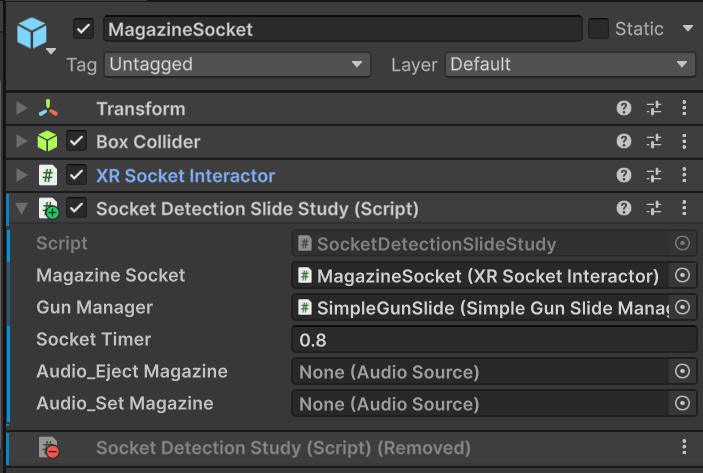 | 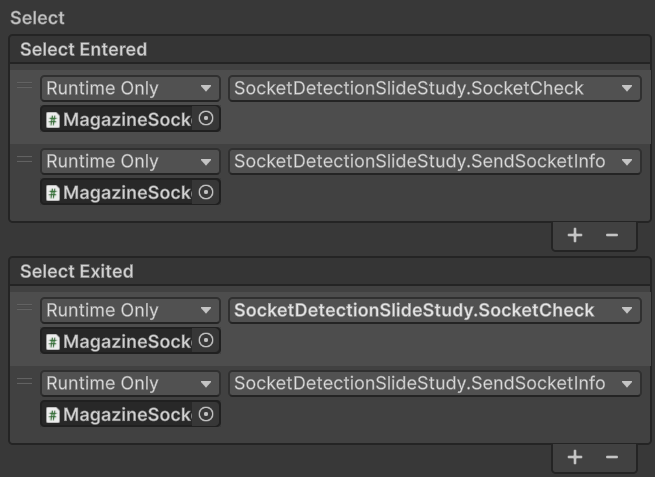 |
✅ 確認
- Quest 3 で実行して、片手で銃を持ちトリガーをしても弾が出ない。スライドを引いても同じ。
- もう片方の手でマガジンを拾い、マガジンを装填し、トリガーをしても弾が出ない
- マガジン装着状態でスライドを引くと、トリガーで弾が発射
- 弾はマガジンに設定された弾数より多くは撃てない
- マガジンに設定された弾数を撃ちきると、スライドが後ろに下がって固定される
- スライドはもう一度引くか、新しいマガジンが装填されると元に戻る
ここまでで、 Chapter 9 のすべての動作確認は終了です
薬室処理を確認
後半は、サンプルのコードのコピーで済ませたので、薬室の処理を確認しておきます。
薬室が空だと弾は撃てない
9-1 のマガジン処理までは、「マガジンが入っているか / マガジンの弾が残っているか」でしたが、薬室が実装されたので、 PullTrigger の処理が大きく変っています。
public void PullTrigger()
{
// 薬室が空だと、撃つことができない
if (isChamberFill == false)
{
return;
}
// 弾を発射する。これまでの Fire() と同じ。
LaunchBullet();
// マガジンの残弾を確認し、処置する
ChamberCheck();
}さて、ではこの isChamberFill はいつ true になるのでしょうか？
薬室処理の基本
上記の PullTrigger の ChamberCheck() を確認します。薬室は「撃ったら自動的に次の弾が入ってくる」はずなので、ここでも isChamberFill は true になるはずです。
以下は ChamberCheck をごくごく単純な構成にしたものです。
public void PullTrigger()
{
ChamberCheck();
}
public void ChamberCheck()
{
// === マガジンが挿入されていない
if (!MagazineCache)
{
// == 薬室に弾が入っている (射撃直後も入っている)
if (GetChamberFill())
{
EjectCase();
}
else
{
}
isChamberFill = false; // 薬室は空
}
// === マガジンが入っている
else if (MagazineCache.TryGetComponent<SimpleMagazineManager>(out var magazine))
{
// == 薬室に弾が入っている (射撃直後も入っている)
if (GetChamberFill())
{
EjectCase();
}
// == マガジンに残弾あり
if (magazine.GetBulletNum() > 0)
{
// 一発減らす
magazine.SetBulletNum(magazine.GetBulletNum() - 1);
isChamberFill = true; // 薬室に弾あり
}
else
{
isChamberFill = false; // 薬室は空
}
}
}GetChamberFill() == trueつまり、 薬室に弾があればいずれにしろEjectCase()で薬莢が排出される- 後は、「マガジンが挿入されている OR 挿入されていない」「マガジンに残弾あり OR 残弾無し」で分岐する
ここから、isChamberFill は、「マガジンが入っている AND マガジンに残弾がある」の条件で true になると分かります。つまりここでは、薬室に次弾を装填というのは、単に「撃てる弾があるかのチェック」 でしかないということです。
ただ、お気づきの通りで、これだと 最初に isChamberFill を true にするタイミングが無いです。 これは、マガジン挿入後に最初に引くスライド側で発生すると考えると自然です。
以下は SimpleSlideManagerStudy の ReloadStateManager メソッドをごくごく単純な構成にしたものです。
// SimpleSlideManagerStudy
private void Update()
{
ReloadStateManager();
}
void ReloadStateManager()
{
var gunBody = ParentGun.GetComponent<SimpleGunSlideManagerStudy>();
// プレイヤーがスライドを後ろまで引いて、手を離したフレーム
if (isSlidePullMax && !isGrabbed)
{
Debug.Log($"{name}: スライド側でCheckChamberSlide発火");
gunBody.ChamberCheck();
isSlidePullMax = false; // ニュートラル状態に
}
}isSlidePullMaxは手でスライドを引いた時に、「後方に限界まで引っ張った時に true になる」値- この値は離す (
Released) 時もtrueのままになってしまっている
- この値は離す (
- この値と、手を離したタイミング (
!isGrabbed) でスライドを引いて離したタイミングを取得し、先程の銃側の薬室チェック (ChamberCheck) を実行する- 当然ながら、この時点で マガジンが挿さっていないと補充されない
- 最後に
isSlidePullMaxをfalseにする- こうしないと、スライドを触っただけで再度この処理が実行されてしまう (
!isGrabbedは触って離すだけでtrueになるので)
- こうしないと、スライドを触っただけで再度この処理が実行されてしまう (
これで、「薬室に弾が補充される」「薬室に弾が無いと撃てない」仕組みが理解できました。
スライドのホールドオープン状態を確認
あまり目立ちませんが、弾を撃ち続けて残弾が 0 になると、スライドが後ろに下がりっぱなしになる「ホールドオープン状態」になります。
以下は、 SimpleSlideManagerStudy / SimpleGunSlideManagerStudy のホールドオープン関連のコードを抜き出したものです。条件式を分かりやすく書き直している箇所があります。
// SimpleSlideManagerStudy
private void Update()
{
// ReloadStateManager(); の後
// 手でスライドは持っていない
if (!isGrabbed)
{
// ホールドオープン状態
if (GetSlidePullBack())
{
// ホールドオープン状態時は後方で維持される
SlideBody.transform.localPosition =
new Vector3(0, 0, DistanceLimitNegative)
+ VirtualAnchor.transform.localPosition;
}
else
{
SlideBody.transform.localPosition =
VirtualAnchor.transform.localPosition;
}
}
}
void ReloadStateManager()
{
// プレイヤーがスライドを後ろまで引いて、手を離したフレーム
if (isSlidePullMax && !isGrabbed)
{
// この if の最後にこれを追加
isSlidePullBack = false; // 残弾 0 のホールドオープン状態であれば戻す。新しいマガジンを入れた場合に必要になる
}
}
public void SetSlidePullBack(bool pullback)
{
isSlidePullBack = pullback;
}
public bool GetSlidePullBack()
{
return isSlidePullBack;
}// SimpleGunSlideManagerStudy
public void ChamberCheck()
{
// === マガジンが挿入されていない
if (!MagazineCache)
{
// == 薬室に弾が入っている (射撃直後も入っている)
if (GetChamberFill())
{
EjectCase();
// マガジンが空なので残弾も 0
Slide.SetSlidePullBack(true); // 残弾 0 なので後ろに引かれた「ホールドオープン」状態に
}
else
{
Slide.SetSlidePullBack(false); // 🤔マガジンが入っていないとホールドオープンにはならない？
}
isChamberFill = false; // 薬室は空
}
// === マガジンが入っている
else if (MagazineCache.TryGetComponent<SimpleGunSlideManagerStudy>(out var magazine))
{
// == 薬室に弾が入っている (射撃直後も入っている)
if (GetChamberFill())
{
EjectCase();
}
// == マガジンに残弾あり
if (magazine.GetBulletNum() > 0)
{
// 一発減らす
magazine.SetBulletNum(magazine.GetBulletNum() - 1);
isChamberFill = true; // 薬室に弾あり
}
else
{
Slide.SetSlidePullBack(true);
isChamberFill = false; // 薬室は空
}
}
}SimpleSlideManagerStudySetSlidePullBack(true)を呼び出すことで、ホールドオープン状態になる- ホールドオープン状態になると、単純に
DistanceLimitNegative分だけ後方に座標がずらされる - プレイヤーがスライドを一定距離まで引いて離すと、ホールドオープン状態は解除される
SimpleGunSlideManagerStudySetSlidePullBack(true)を呼び出すのは、最後の弾を撃ったと判定できたとき